<div class="textcontainer">
<p class="margin"> </p>
<h3>Week 8: CNC Milling</h3>
<h4>Assignment: Make Something With CNC</h4>
The goal for this week was to use a CNC machine to mill a custom PCB to use as for a stepper motor driver. The steps taken were: <br>
1. Design the schematics in KiCad <br>
2. Rearrange wiring and resolve crossing with jump (zero-Ohm) resistors <br>
3. Follow the tutorial at the bottom of the CNC page on the course website to use the momofab to engrave the copper board <br>
4. Remove conductive copper from the other side of the board <br>
5. Desolder components from other boards <br>
6. Solder components to PCB <br>
<p class="margin"> </p>
<div class="class\">
<img src="Screenshot 2026-07-21 at 14.35.41.png" alt="screenshot of schematics in KiCad">
</div>
<p class="caption"></p>
This first part was very tedious. It involved looking at every input of the stepper motor driver and XIAO-ESP32-C3 to
figure out what inputs and outputs were connected to each other, and thus which to wire to power, which to wire to ground, and which to wire
to each other. After manually drawing the relationships, KiCad allowed us to initialize all of the layers and manually draw the wiring routes, at which point the need for
jump resistors presented itself.
<p class="margin"> </p>
<div class="flexrow">
<video controls>
<source src="./milling.mov" type="video/mov">
</video>
</div>
<div class="flexrow">
<p>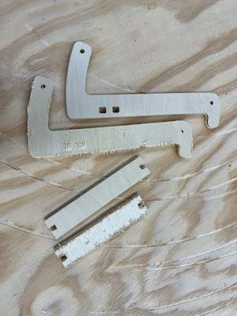</p>
</div>
<p class="caption">The ShopBot was an efficient choice for cutting the pieces out of plywood.</p>
The next step was to process the pieces and fit it all together. The cutting bit
splintered the outer layers of the plywood a little, so I used some sandpaper to
smooth them out. The wooden stubs on the ends of the crosspieces were too large to
fit into the holes cut for them, so I cut them down a little on the bandsaw. I
cut down a small dowel to use as a crosspiece for the hinge at the bottom, then
fit all the pieces together.
<p class="margin"> </p>
<div class="flexrow">
<p>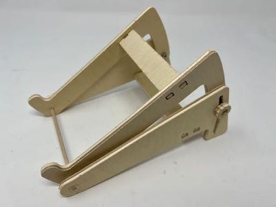</p>
<p>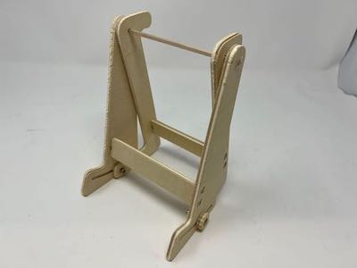</p>
</div>
<div class="flexrow">
<p>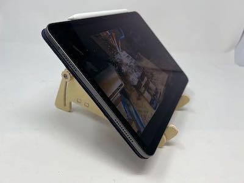</p>
<p>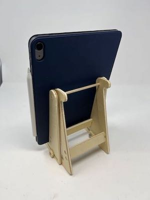</p>
</div>
<p class="caption">Photos of the table stand showing its various use cases.</p>
<p class="margin"> </p>
<p class="margin"> </p>
<div class="flexrow">
<p>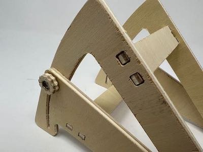</p>
<p>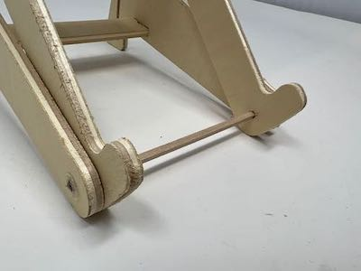</p>
</div>
<div class="flexrow">
<p>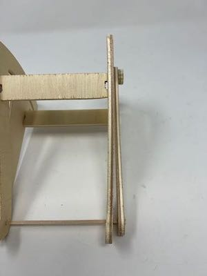</p>
</div>
<p class="caption">Here you can see the details of how the stand fits together, as well as the warped side piece.</p>
The final stand is adjustable to a range of angles and can be used both vertically
and horizontally. One of the pieces of plywoood is a little warped, so the edge
isn't quite straight, but it's not enough of a defect to make the stand unusable.
I sanded down all the edges more and used some black wood stain to make the stand
look a little nicer; I didn't want it to be pure black, so instead of letting the
stain soak in for the recommended time I wiped the excess off right after I was done
painting it on, which left me with a cool, charcoal kind of look.
<p class="margin"> </p>
<div class="flexrow">
<p>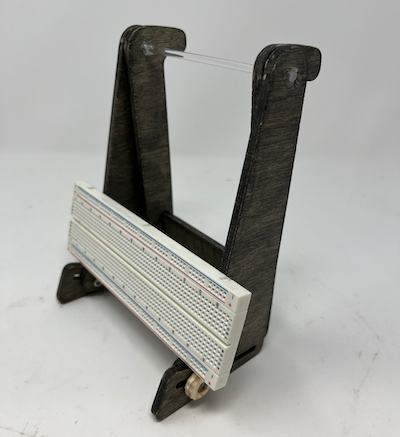</p>
<p>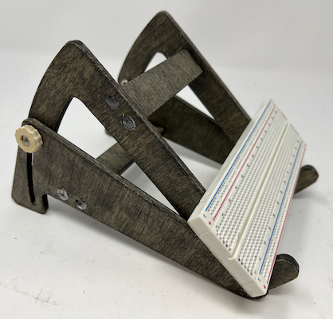</p>
</div>
<div class="flexrow">
<p>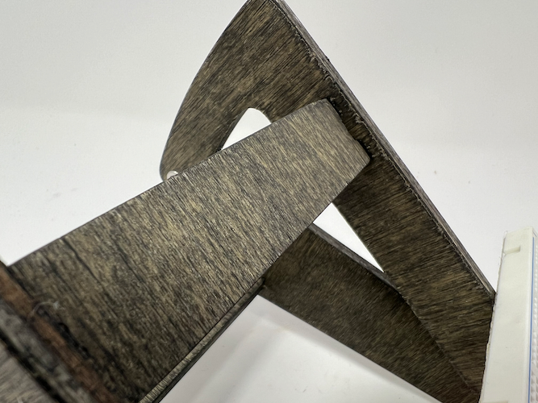</p>
</div>
<p class="caption">Some images of the completed tablet stand.</p>
</div>